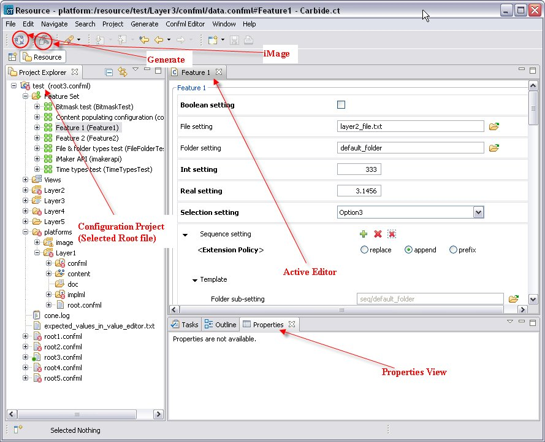

Overview of Carbide.ct tool
Carbide.ct tool is a tool for handling Configuration Projects. It can be used by developers, variant engineers and build engineers for the following purposes:
- Developers can use the tool to create new Configuration Markup Language (ConfML) files for type definitions and to refine existing ones.
- Variant engineers can use the tool to specify variant data and manage variant content.
- Build engineers can use Carbide.ct and associated tools to do batch operations on ConfML data.
With this tool, you can:
- Manage Configuration Projects: create a new project, add and remove layers, import files to the layers, edit the files, and add content to the project, and so on.
- Import and export Configuration Project Files (CPF).
- Create and modify ConfML files.
- Refine existing configuration elements (features and settings) using different internal editors.
- Import or define implementation markup languages (ImplML) for configuration elements.
- Convert ConfML files and associated content to the target device format.
- Validate ConfML files.
- Package created files into an image file usable by target devices and emulators.
The following figure shows an overview of the Carbide.ct tools’ user interface elements in Eclipse. Each Configuration Project can contain one or more configurations and layers, and you can edit their details.

Figure Sample of the Carbide.ct user interface